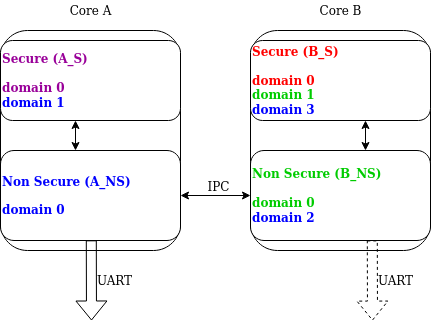

日志
日志 API 提供了一个通用接口，用于处理开发者发出的消息。消息先经过前端，然后由处于活动状态的后端处理。前端负责立即过滤日志消息并将其排队，因此必须足够快。后端可以稍后运行，并且可以花费更多时间。后端负责格式化日志消息并将其发送到目的地，例如 UART、RTT 或 BLE。如有需要，可以使用自定义前端和自定义后端。
日志功能概要：
延迟日志：把耗时的操作转移到已知的上下文中执行，而不是在调用时就处理并发送日志消息，从而缩短记录一条消息所需的时间。
支持多个后端（最多 9 个后端）。
支持自定义前端，并可与标准后端协同工作。
在模块级别进行编译时过滤。
每个后端独立进行运行时过滤。
在模块实例级别进行额外的运行时过滤。
使用用户提供的函数生成时间戳。时间戳可以是 32 位或 64 位。
用于转储数据的专用 API。
用于处理临时字符串的专用 API。
支持 panic：在 panic 模式下，日志切换为阻塞式的同步处理。
支持 printk：printk 消息可以重定向到日志系统。
设计上支持多域/多处理器系统。
支持记录浮点数和
long long值。内置对用作参数的临时字符串的复制。
支持多域日志。
提供限速日志宏，防止频繁生成消息时日志泛滥。
日志 API 在编译时和运行时都高度可配置。通过 Kconfig 选项（参见 全局 Kconfig 选项），可以在不需要日志时逐步将日志排除在编译之外，以减小镜像大小并缩短执行时间。在编译期间，可以按模块和严重级别过滤日志。
日志也可以编译进来，但在运行时使用专用 API 进行过滤。运行时过滤对每个后端和每个日志消息源都是独立的。日志消息的源可以是一个模块，也可以是某个模块的特定实例。
系统中有四个严重级别：error、warning、info 和 debug。对于每个严重级别，日志 API（include/zephyr/logging/log.h）都有一组专用的宏。此外还有用于记录数据的宏。
每个严重级别都提供以下一组宏：
LOG_X：用于标准的类 printf 消息，例如LOG_ERR。LOG_HEXDUMP_X：用于转储数据，例如LOG_HEXDUMP_WRN。LOG_INST_X：用于与特定实例关联的标准类 printf 消息，例如LOG_INST_INF。LOG_INST_HEXDUMP_X：用于转储与特定实例关联的数据，例如LOG_INST_HEXDUMP_DBG
warning 级别还额外提供以下宏：
LOG_WRN_ONCE：用于只关心首次出现的警告。
所有严重级别还提供限速日志宏，以防止日志泛滥：
LOG_X_RATELIMIT：使用默认速率的限速标准类 printf 消息，例如LOG_ERR_RATELIMIT。LOG_X_RATELIMIT_RATE：使用自定义速率的限速标准类 printf 消息，例如LOG_ERR_RATELIMIT_RATE。LOG_HEXDUMP_X_RATELIMIT：使用默认速率的限速数据转储，例如LOG_HEXDUMP_WRN_RATELIMIT。LOG_HEXDUMP_X_RATELIMIT_RATE：使用自定义速率的限速数据转储，例如LOG_HEXDUMP_WRN_RATELIMIT_RATE。
便捷宏使用 CONFIG_LOG_RATELIMIT_INTERVAL_MS 指定的默认速率，而显式速率宏接受一个速率参数（单位为毫秒），用于指定日志消息之间的最小间隔。
配置分为两类：按模块配置和全局配置。全局启用日志后，默认对所有模块启用。但模块可以在本地禁用日志。每个模块都可以指定自己的日志级别。模块必须在使用 API 之前定义 LOG_LEVEL 宏。除非设置了全局覆盖，否则以模块的日志级别为准。全局覆盖只能提高日志级别，不能用来降低之前设置得更高的模块日志级别。还可以通过指定系统中存在的最大严重级别来全局限制日志，这里的最大是指最低的严重程度（例如，如果系统中的最大级别设为 info，则表示保留 error、warning 和 info 级别，但排除 debug 消息）。
每个使用日志的模块都必须指定唯一的名称，并向日志系统注册自己。如果一个模块由多个文件组成，则只需在其中一个文件中注册，但每个文件都必须指定模块名称。
日志的默认前端设计为线程安全的，并尽量缩短记录消息所需的时间。默认情况下，调用日志 API 时不会执行字符串格式化或访问传输层等耗时操作。调用日志 API 时，会创建一条消息并将其加入列表。日志消息池使用一个专用的、可配置的缓冲区。消息分为 2 种类型：标准消息和 hexdump 消息。每条消息都包含源 ID（模块或实例 ID，以及可能用于多处理器系统的域 ID）、时间戳和严重级别。标准消息包含指向字符串和参数的指针。hexdump 消息包含复制的数据和字符串。
全局 Kconfig 选项
这些选项位于以下文件中：subsys/logging/Kconfig。
CONFIG_LOG：全局开关，打开或关闭日志。
工作模式：
CONFIG_LOG_MODE_DEFERRED：延迟模式。
CONFIG_LOG_MODE_IMMEDIATE：立即（同步）模式。
CONFIG_LOG_MODE_MINIMAL：最小占用模式。
过滤选项：
CONFIG_LOG_RUNTIME_FILTERING：允许在运行时重新配置过滤。
CONFIG_LOG_DEFAULT_LEVEL：默认级别，设置未指定自身日志级别的模块所使用的日志级别。
CONFIG_LOG_OVERRIDE_LEVEL：当模块日志级别未设置或低于该覆盖值时，覆盖模块的日志级别。
CONFIG_LOG_MAX_LEVEL：编译进来的最大（最低严重程度）级别。
处理选项：
CONFIG_LOG_MODE_OVERFLOW：无法分配新消息时，丢弃最旧的消息。
CONFIG_LOG_BLOCK_IN_THREAD：启用后，如果无法分配新的日志消息，线程上下文将阻塞，最长 CONFIG_LOG_BLOCK_IN_THREAD_TIMEOUT_MS，或直到日志消息分配成功。
CONFIG_LOG_PRINTK：将 printk 调用重定向到日志系统。
CONFIG_LOG_PROCESS_TRIGGER_THRESHOLD：当缓冲的日志消息数量达到该阈值时，唤醒专用线程（参见 log_thread_set()）。如果启用了 CONFIG_LOG_PROCESS_THREAD，则由内部线程使用该阈值。
CONFIG_LOG_PROCESS_THREAD：启用后会创建一个日志线程来处理日志。
CONFIG_LOG_PROCESS_THREAD_STARTUP_DELAY_MS：日志线程启动前的延迟，单位为毫秒。
CONFIG_LOG_BUFFER_SIZE：分配给环形包缓冲区的字节数。
CONFIG_LOG_FRONTEND：将日志定向到自定义前端。
CONFIG_LOG_FRONTEND_ONLY：消息发往前端时不使用任何后端。
CONFIG_LOG_FRONTEND_OPT_API：针对最常见的简单消息进行优化的可选 API。
CONFIG_LOG_CUSTOM_HEADER：将应用程序提供的头文件注入 log.h
CONFIG_LOG_TIMESTAMP_64BIT：64 位时间戳。
CONFIG_LOG_SIMPLE_MSG_OPTIMIZE：针对体积和性能优化简单日志消息。该选项仅适用于 32 位架构。
格式化选项：
CONFIG_LOG_FUNC_NAME_PREFIX_ERR：在标准 ERROR 日志消息前加上函数名。hexdump 消息不加。
CONFIG_LOG_FUNC_NAME_PREFIX_WRN：在标准 WARNING 日志消息前加上函数名。hexdump 消息不加。
CONFIG_LOG_FUNC_NAME_PREFIX_INF：在标准 INFO 日志消息前加上函数名。hexdump 消息不加。
CONFIG_LOG_FUNC_NAME_PREFIX_DBG：在标准 DEBUG 日志消息前加上函数名。hexdump 消息不加。
CONFIG_LOG_BACKEND_SHOW_TIMESTAMP：使后端在日志中打印时间戳。
CONFIG_LOG_BACKEND_SHOW_LEVEL：使后端在日志中打印级别。
CONFIG_LOG_BACKEND_SHOW_COLOR：为错误（红色）和警告（黄色）着色。
CONFIG_LOG_BACKEND_FORMAT_TIMESTAMP：启用后，时间戳格式化为 hh:mm:ss:mmm,uuu，否则以原始格式打印。
后端选项：
CONFIG_LOG_BACKEND_UART：启用内置的 UART 后端。
CONFIG_LOG_BACKEND_NET：启用内置的网络后端，将 syslog 消息发送到网络服务器。
用法
在模块中记录日志
要在模块中使用日志，必须为模块指定一个唯一的名称，并使用 LOG_MODULE_REGISTER 注册该模块。可以选择通过第二个参数指定模块的编译时日志级别。如果未提供自定义日志级别，则使用默认日志级别（CONFIG_LOG_DEFAULT_LEVEL）。
#include <zephyr/logging/log.h>
LOG_MODULE_REGISTER(foo, CONFIG_FOO_LOG_LEVEL);
如果模块由多个文件组成，则 LOG_MODULE_REGISTER() 应当只出现在其中一个文件中。其他每个文件都应使用 LOG_MODULE_DECLARE 声明自己属于该模块。可以选择通过第二个参数指定模块的编译时日志级别。如果未提供自定义日志级别，则使用默认日志级别（CONFIG_LOG_DEFAULT_LEVEL）。
#include <zephyr/logging/log.h>
/* In all files comprising the module but one */
LOG_MODULE_DECLARE(foo, CONFIG_FOO_LOG_LEVEL);
要在头文件中实现的函数里使用日志 API，必须在调用日志 API 之前，在函数体中使用 LOG_MODULE_DECLARE 宏。可以选择通过第二个参数指定模块的编译时日志级别。如果未提供自定义日志级别，则使用默认日志级别（CONFIG_LOG_DEFAULT_LEVEL）。
#include <zephyr/logging/log.h>
static inline void foo(void)
{
LOG_MODULE_DECLARE(foo, CONFIG_FOO_LOG_LEVEL);
LOG_INF("foo");
}
可以使用专用的 Kconfig 模板（subsys/logging/Kconfig.template.log_config）创建本地日志级别配置。
下面的示例展示了该模板的用法。结果会生成 CONFIG_FOO_LOG_LEVEL：
module = FOO
module-str = foo
source "subsys/logging/Kconfig.template.log_config"
在模块实例中记录日志
如果某些模块是多实例的，并且这些实例在系统中被广泛使用，启用日志就会导致日志泛滥。日志 API 提供了在实例级别而非模块级别过滤日志的工具。例如，可以只为某个特定实例启用日志。
要使用实例级过滤，必须执行以下步骤：
在实例结构体中声明一个指向特定日志结构体的指针，为此使用
LOG_INSTANCE_PTR_DECLARE。
#include <zephyr/logging/log_instance.h>
struct foo_object {
LOG_INSTANCE_PTR_DECLARE(log);
uint32_t id;
}
模块必须提供一个用于实例化的宏。在该宏中注册日志实例，并在对象结构体中初始化日志实例指针。
#define FOO_OBJECT_DEFINE(_name) \
LOG_INSTANCE_REGISTER(foo, _name, CONFIG_FOO_LOG_LEVEL) \
struct foo_object _name = { \
LOG_INSTANCE_PTR_INIT(log, foo, _name) \
}
注意，禁用日志时，不会创建日志实例以及指向该实例的指针。
要在源文件中使用实例日志 API，必须使用 LOG_LEVEL_SET 设置编译时日志级别。
LOG_LEVEL_SET(CONFIG_FOO_LOG_LEVEL);
void foo_init(foo_object *f)
{
LOG_INST_INF(f->log, "Initialized.");
}
要在头文件中使用实例日志 API，必须使用 LOG_LEVEL_SET 设置编译时日志级别。
static inline void foo_init(foo_object *f)
{
LOG_LEVEL_SET(CONFIG_FOO_LOG_LEVEL);
LOG_INST_INF(f->log, "Initialized.");
}
控制日志
默认情况下，延迟模式下的日志处理由一个自动启动的专用任务在内部完成。但如果禁用了多线程，该任务可能不可用。也可以通过取消设置 CONFIG_LOG_PROCESS_TRIGGER_THRESHOLD 来禁用它。这种情况下，可以使用 include/zephyr/logging/log_ctrl.h 中定义的 API 来控制日志。日志必须先初始化才能使用。用户可以选择提供一个返回时间戳值的函数；如果未提供，则使用 k_cycle_get 或 k_cycle_get_32 生成时间戳。log_process() 函数用于处理一条日志消息（如果有待处理的消息），如果还有更多待处理的消息则返回 true。不过，建议使用宏封装（LOG_INIT 和 LOG_PROCESS），它们会处理禁用日志的情况。
下面的代码片段展示了如何在一个简单的无限循环中处理日志。
#include <zephyr/logging/log_ctrl.h>
int main(void)
{
LOG_INIT();
/* If multithreading is enabled provide thread id to the logging. */
log_thread_set(k_current_get());
while (1) {
if (LOG_PROCESS() == false) {
/* sleep */
}
}
}
如果日志由线程（用户线程或内部线程）处理，则可以启用一项功能：当缓冲的日志消息达到一定数量时唤醒处理线程（参见 CONFIG_LOG_PROCESS_TRIGGER_THRESHOLD）。
限速日志
限速日志宏提供了一种在频繁生成消息时防止日志泛滥的方法。这些宏确保日志消息的输出频率不超过指定的间隔，类似于 Linux 的 printk_ratelimited 功能。
限速日志系统提供两类宏：
便捷宏（使用默认速率）： - LOG_ERR_RATELIMIT - 限速的错误消息 - LOG_WRN_RATELIMIT - 限速的警告消息 - LOG_INF_RATELIMIT - 限速的信息消息 - LOG_DBG_RATELIMIT - 限速的调试消息 - LOG_HEXDUMP_ERR_RATELIMIT - 限速的错误 hexdump - LOG_HEXDUMP_WRN_RATELIMIT - 限速的警告 hexdump - LOG_HEXDUMP_INF_RATELIMIT - 限速的信息 hexdump - LOG_HEXDUMP_DBG_RATELIMIT - 限速的调试 hexdump
显式速率宏（使用自定义速率）： - LOG_ERR_RATELIMIT_RATE - 使用自定义速率限速的错误消息 - LOG_WRN_RATELIMIT_RATE - 使用自定义速率限速的警告消息 - LOG_INF_RATELIMIT_RATE - 使用自定义速率限速的信息消息 - LOG_DBG_RATELIMIT_RATE - 使用自定义速率限速的调试消息 - LOG_HEXDUMP_ERR_RATELIMIT_RATE - 使用自定义速率限速的错误 hexdump - LOG_HEXDUMP_WRN_RATELIMIT_RATE - 使用自定义速率限速的警告 hexdump - LOG_HEXDUMP_INF_RATELIMIT_RATE - 使用自定义速率限速的信息 hexdump - LOG_HEXDUMP_DBG_RATELIMIT_RATE - 使用自定义速率限速的调试 hexdump
便捷宏使用 CONFIG_LOG_RATELIMIT_INTERVAL_MS 指定的默认速率（默认为 5000ms）。显式速率宏接受一个速率参数（单位为毫秒），用于指定日志消息之间的最小间隔。限速按宏的调用点进行，也就是说，对限速宏的每个不同调用都有各自独立的速率限制。
用法示例：
#include <zephyr/logging/log.h>
#include <zephyr/kernel.h>
LOG_MODULE_REGISTER(my_module, CONFIG_LOG_DEFAULT_LEVEL);
void process_data(void)
{
/* Convenience macros using default rate (CONFIG_LOG_RATELIMIT_INTERVAL_MS) */
LOG_WRN_RATELIMIT("Data processing warning: %d", error_code);
LOG_ERR_RATELIMIT("Critical error occurred: %s", error_msg);
LOG_INF_RATELIMIT("Processing status: %d items", item_count);
LOG_HEXDUMP_WRN_RATELIMIT(data_buffer, data_len, "Data buffer:");
/* Explicit rate macros with custom intervals */
LOG_WRN_RATELIMIT_RATE(1000, "Fast rate warning: %d", error_code);
LOG_ERR_RATELIMIT_RATE(30000, "Slow rate error: %s", error_msg);
LOG_INF_RATELIMIT_RATE(2000, "Custom rate status: %d items", item_count);
LOG_HEXDUMP_ERR_RATELIMIT_RATE(5000, data_buffer, data_len, "Error data:");
}
限速日志特别适用于：
可能频繁发生、但不需要刷屏日志的错误情况
紧凑循环或高频回调中的状态更新
可能压垮日志系统的调试信息
可能反复失败的网络或 I/O 操作
配置
可以使用以下 Kconfig 选项配置限速日志：
CONFIG_LOG_RATELIMIT- 启用/禁用限速日志的总开关CONFIG_LOG_RATELIMIT_INTERVAL_MS- 便捷宏的默认间隔（5000ms）
禁用 CONFIG_LOG_RATELIMIT 时，限速宏的行为由 CONFIG_LOG_RATELIMIT_FALLBACK 选项控制：
CONFIG_LOG_RATELIMIT_FALLBACK_LOG- 所有限速宏都按普通日志宏工作CONFIG_LOG_RATELIMIT_FALLBACK_DROP- 所有限速宏都展开为空操作（默认）
这样你就可以控制在无法使用限速功能时，限速日志宏是始终打印，还是完全不输出。
限速通过静态变量和 k_uptime_get_32() 实现，用于记录每个调用点的上次日志时间。
日志 panic
出现错误情况时，系统通常无法再依赖调度器或中断。此时无法进行延迟日志消息处理。日志控制 API 提供了一个进入 panic 模式的函数（log_panic()），在这种情况下应调用该函数。
调用 log_panic() 时，会向所有处于活动状态的后端发送 panic 通知。所有后端都收到通知后，所有缓冲的消息都会被刷出。从那时起，所有日志都以阻塞方式处理。
Printk
通常，日志和 printk() 使用同一个输出，二者会争用该输出。如果输出不支持抢占，就可能出现问题；日志数据与 printk 数据交错也可能导致输出混乱。不过，启用 CONFIG_LOG_PRINTK 可以把 printk 消息重定向到日志子系统。这种情况下，printk 条目被当作级别为 0 的日志消息（无法禁用）。启用后，输出由日志系统管理，因此不会出现交错。但在延迟模式下，printk 的行为会发生变化，因为输出要等到日志线程处理数据时才会产生。CONFIG_LOG_PRINTK 默认启用。
架构
日志由 3 个主要部分组成：
前端
核心
后端
日志消息由日志源生成，日志源可以是一个模块，也可以是某个模块的实例。
默认前端
当日志源调用日志 API（例如 LOG_INF）时，默认前端开始工作，负责过滤消息（编译时和运行时）、为消息分配缓冲区、创建消息并提交该消息。由于日志 API 可能在中断中调用，前端经过优化，以尽可能快地记录消息。
日志消息
一条日志消息包含消息描述符（源、域和级别）、时间戳、格式化字符串的详细信息（参见 Cbprintf 打包）以及可选的数据。日志消息存储在一块连续的内存中。内存从一个环形包缓冲区（多生产者单消费者数据包缓冲区）中分配，这会带来以下几点影响：
每条消息都是一块自包含的连续内存，因此便于复制消息（例如用于离线处理）。
消息必须按顺序释放。后端处理是同步的。后端可以复制一份消息以便延迟处理。
日志消息的格式如下：
消息头 |
2 位：MPSC 包缓冲区头 |
1 位：跟踪/日志消息标志 |
|
3 位：域 ID |
|
3 位：级别 |
|
11 位：Cbprintf 包长度 |
|
12 位：数据长度 |
|
指针：指向源描述符的指针 [1] |
|
32 或 64 位：时间戳 [1] |
|
指针：指向线程 ID 的指针（可选） [2] |
|
8 位：内核 ID（可选） [3] |
|
可选填充 [4] |
|
Cbprintf 包
（可选）
|
头部 |
参数 |
|
追加的字符串 |
|
Hexdump 数据（可选） |
|
对齐填充（可选） |
|
脚注
日志消息分配
前端有可能无法分配消息。当系统在一定时间内产生的日志消息多于其处理能力时，就会出现这种情况。处理这种情况有两种策略：
不覆盖：如果无法为消息分配空间，则丢弃新日志。
覆盖：释放最旧的待处理消息，直到能够分配新消息。通过
CONFIG_LOG_MODE_OVERFLOW启用。注意，这会降低性能，因此建议调整缓冲区大小和启用的日志数量，以减少丢弃。
运行时过滤
如果启用了运行时过滤，则会在 RAM 中为每个日志源声明一个过滤器结构体。该过滤器使用 32 位，分为十个 3 位的槽位。除 slot 0 外，每个槽位存储系统中一个后端的当前过滤器。slot 0（位 0-2）用于汇总给定日志源的最大过滤器设置。汇总槽位决定是否为给定条目创建日志消息，因为它表示是否至少有一个后端需要该日志条目。核心处理消息时会检查各后端的槽位，以确定该消息是否被对应后端接受。与编译时过滤相比，二进制文件占用会增加，因为被丢弃的日志仍然编译在内。
在下面的示例中，后端 1 设置为接收错误（slot 1），后端 2 接收 info 及以上级别（slot 2）。槽位 3-9 未使用。汇总过滤器（slot 0）设置为 info 级别，表示来自该日志源、级别不低于 info 的消息都会被缓冲。
slot 0 |
slot 1 |
slot 2 |
slot 3 |
... |
slot 9 |
INF |
ERR |
INF |
OFF |
... |
OFF |
自定义前端
使用 CONFIG_LOG_FRONTEND 启用自定义前端。日志会被定向到 include/zephyr/logging/log_frontend.h 中声明的函数。如果启用了 CONFIG_LOG_FRONTEND_ONLY 选项，则不会创建日志消息，也不会处理任何后端。否则，自定义前端可以与后端共存。
某些情况下，需要在宏级别重定向日志。对于这种情况，可以使用 CONFIG_LOG_CUSTOM_HEADER，在 include/zephyr/logging/log.h 末尾注入一个由应用程序提供、名为 zephyr_custom_log.h 的头文件。
使用 ARM Coresight STM（System Trace Macrocell）的前端
有关使用 ARM Coresight STM 记录日志的更多详情，请参阅 使用 ARM Coresight STM 进行多域日志记录。
记录字符串
字符串参数由 Cbprintf 打包 处理。有关限制和建议，请参阅 限制与建议。
多域支持
较复杂的系统可能由多个域组成，每个域都是一个独立的二进制文件。域的例子包括多核 SoC 中的一个内核，或 ARM TrustZone 内核上的某个二进制文件（Secure 或 Nonsecure）。
在多域系统上进行跟踪和调试更为复杂，需要一个高效的日志系统。组织这种日志系统有两种方法：
在每个域内独立记录日志。这种方法并非总是可行，因为它要求每个域都有可用的后端（例如 UART）。由于日志呈现在各自独立的输出上，这种方法使用起来也可能比较麻烦，而且不易扩展。
使用多域日志系统，来自各个域的日志消息最终汇集到一个根域，并在那里按与单域情况完全相同的方式处理。在这种方法中，日志消息通过域间连接在域之间传递，该连接一端由后端创建，另一端链接到对方。
日志链路（Log link）是这种多域方法中引入的接口。日志链路负责接收来自其他域的任意日志消息，创建其副本，并把该本地日志消息副本（包括远程数据）放入消息队列。具体的日志链路实现与对应的后端实现相配合，以支持日志消息交换和日志控制，例如配置过滤、获取日志源名称等。
多域系统中有三种类型的域：
终端域（end domain） 具有日志核心实现和一个跨域后端。它还可以同时拥有其他后端。
中继域（relay domain） 具有一条或多条到其他域的链路，但没有向用户输出日志的后端。它有一个跨域后端，连接到另一个中继域或根域。
根域（root domain） 具有一条或多条链路，以及一个向用户输出日志的后端。
多域设置的示例见下图：

在这种架构中，一条链路可以处理多个域。例如，考虑一个带有两个支持 TrustZone 的 ARM Cortex-M33 内核的 SoC：内核 A 和内核 B（见上图示例）。由于每个内核都有 Secure 域和 Nonsecure 域，系统中共有四个域。如果 core A nonsecure（A_NS）是根域，则它有两条链路：一条到 core A secure（A_NS-A_S），一条到 core B nonsecure（A_NS-B_NS）。B_NS 域有一条到 core B secure 的链路（B_NS-B_S），以及一个到 A_NS 的后端。
由于所有实例中都有标准日志子系统，因此总是可以拥有多个后端并同时向它们输出消息。上图中 B_NS 域上用虚线表示的 UART 后端就是一个例子。
域 ID
每条日志消息的源可以通过消息头中的以下字段识别：source_id 和 domain_id。
分配给 domain_id 的值是相对的。每当某个域创建日志消息时，都会将其 domain_id 设为 0。当消息跨越域时，domain_id 会加上链路偏移量。链路偏移量在初始化期间分配，此时日志核心遍历所有已注册的链路并为其分配偏移量。
第一条链路的偏移量设为 1。后续链路的偏移量等于前一条链路的偏移量加上前一条链路中的域数量。
下面是一个示例，图中标出了为每个域分配的 domain_ids：

考虑在 B_S 域上创建的一条日志消息：
最初，它的
domain_id设为0。B_NS-B_S 链路收到消息时，加上 B_NS-B_S 的偏移量，把
domain_id增加到1。消息被传递到 A_NS。
A_NS-B_NS 链路收到消息时，把偏移量（
2）加到domain_id上。最终消息的domain_id为3，它唯一标识了消息的发起者。
跨域日志消息
在大多数情况下，每个域的地址空间都是独立的，一个域无法直接访问另一个域中的数据。因此，后端可以在把消息传递给另一个域之前对其进行部分处理。部分处理可以包括把字符串包转换为 完全自包含 的版本（把只读字符串复制到包体中）。
每个域的时间戳源在频率和偏移上都可能不同。日志系统不进行任何时间戳转换。
运行时过滤
在单域情况下，每个日志源都有一个专用变量，为系统中的每个后端保存运行时过滤设置。在多域情况下，日志消息的发起者并不知道根域中有多少个后端。
因此，要在多个域中过滤日志，每个日志源在通往根域路径上的每个域中都需要一个运行时过滤设置。由于编译时并不知道其他域中日志源的数量，远程日志源的运行时过滤必须使用动态分配的内存（每个日志源一个字）。当根域中的某个后端更改来自远程域的模块的过滤设置时，本地过滤器随之更新。更新后会检查汇总过滤器（所有本地后端中的最大值），如果发生变化，就通知远程域。通过这种方法，运行时过滤在多域和单域场景下的工作方式完全相同。
消息排序
日志系统不提供任何跨多个域同步时间戳的机制：
如果各个域的时间戳源不同，消息将按照到达根域缓冲区的顺序处理。
如果各个域使用相同的时间戳源，或者有某种带外机制重新计算时间戳，则有 2 种选择：
消息按其到达根域缓冲区的顺序处理。消息是无序的，但由于时间戳表示消息的生成时间，主机可以对它们排序。
各条链路有专用缓冲区。处理时检查每个缓冲区的头部，先处理最早的消息。
采用这种方法可以保持消息顺序，代价是内存利用率不够理想（因为缓冲区不共享），并且处理延迟增加（参见
CONFIG_LOG_PROCESSING_LATENCY_US）。
日志后端
日志后端使用 LOG_BACKEND_DEFINE 注册。该宏在专用内存段中创建一个实例。后端可以动态启用（log_backend_enable()）和禁用。启用 运行时过滤 后，可以使用 log_filter_set() 动态更改某个后端对某个模块日志的过滤设置。模块由源 ID 和域 ID 标识。如果知道源名称，可以遍历所有已注册的源来获取源 ID。
日志系统最多支持 9 个并发后端。在处理阶段，日志消息会传递给每个后端。此外，当日志进入 panic 模式时，会通过 log_backend_panic() 通知后端。此时后端应切换为同步、不使用中断的工作方式；如果不支持，则应自行关闭。日志系统偶尔会通过 log_backend_dropped() 告知后端被丢弃的消息数量。消息处理 API 与版本相关。
log_backend_msg_process() 用于处理消息。它对标准消息和 hexdump 消息通用，因为标准消息存放格式化参数的位置与 hexdump 消息存放数据的位置相同。它对延迟日志和立即日志也同样通用。
消息格式化
日志系统提供了一组可供后端用来格式化消息的函数。辅助函数位于 include/zephyr/logging/log_output.h 中。
使用 log_output_msg_process() 格式化的消息示例：
[00:00:00.000,274] <info> sample_instance.inst1: logging message
基于字典的日志
基于字典的日志以二进制格式而不是人类可读的文本输出日志消息。这种二进制格式以参数的原生存储格式对格式化字符串的参数进行编码，可能比等价的文本更紧凑。对于静态定义的字符串（包括格式字符串和任何字符串参数），编码的是对 ELF 文件的引用，而不是整个字符串。构建时会创建一个字典，其中包含这些引用与实际字符串之间的映射。这样离线解析器就可以从字典中获取字符串来解析日志消息。在某些场景下，这种二进制格式能更紧凑地表示日志消息。不过，它需要使用离线解析器，用起来也不如基于文本的日志消息直观。
注意，Python 的 struct 模块不支持 long double。因此，含有 long double 的日志消息将无法显示正确的值。
配置
以下是与基于字典的日志相关的 Kconfig 选项：
CONFIG_LOG_DICTIONARY_SUPPORT启用对基于字典的日志的支持。需要它的后端应选择（select）此选项。UART 后端可用于基于字典的日志。以下是 UART 后端的额外配置：
CONFIG_LOG_BACKEND_UART_OUTPUT_DICTIONARY_HEX让 UART 后端在基于字典的日志中输出十六进制字符。当需要通过终端和控制台手动捕获日志数据时，这很有用。CONFIG_LOG_BACKEND_UART_OUTPUT_DICTIONARY_BIN让 UART 后端输出二进制数据。
RTT 后端也可用于基于字典的日志：
CONFIG_LOG_BACKEND_RTT启用 RTT 后端。CONFIG_LOG_BACKEND_RTT_OUTPUT_DICTIONARY为 RTT 后端启用基于字典的输出。需与CONFIG_USE_SEGGER_RTT一起使用。CONFIG_LOG_BACKEND_RTT_OUTPUT_DICTIONARY_HEX让 RTT 后端在基于字典的日志中输出十六进制字符。
用法
通过启用相关日志后端来启用基于字典的日志后，构建目录中会生成一个名为 log_dictionary.json 的 JSON 数据库文件。该数据库文件包含解析器正确解析日志数据所需的信息。注意，该数据库文件只适用于同一次构建，不能用于其他任何构建。
离线解析
要解析先前捕获的日志文件：
./scripts/logging/dictionary/log_parser.py <build dir>/log_dictionary.json <log data file>
解析器有两个必需参数：第一个是 JSON 数据库文件的完整路径，第二个是包含日志数据的文件。如果日志数据文件包含十六进制字符（例如设置了 CONFIG_LOG_BACKEND_UART_OUTPUT_DICTIONARY_HEX=y 时），请在末尾加上可选参数 --hex。该参数告诉解析器在解析之前先把十六进制字符转换为二进制。
实时解析
要实时解码基于字典的日志输出，请使用实时日志解析器。它连接到正在运行的设备，并在二进制日志数据到达时持续解码。注意，实时解析器只支持二进制字典输出（不支持十六进制编码）。实时解析器支持三种输入模式：
串口（UART）：
./scripts/logging/dictionary/live_log_parser.py <build dir>/log_dictionary.json serial <port> <baudrate>
例如，以 115200 波特率从 /dev/ttyACM0 读取：
./scripts/logging/dictionary/live_log_parser.py build/zephyr/log_dictionary.json serial /dev/ttyACM0 115200
JLink RTT：
./scripts/logging/dictionary/live_log_parser.py <build dir>/log_dictionary.json jlink-rtt <device_name>
例如，从 nRF5340 读取 RTT 输出：
./scripts/logging/dictionary/live_log_parser.py build/zephyr/log_dictionary.json jlink-rtt nrf5340_xxaa_app
JLink RTT 模式需要 pylink-square Python 包（pip install pylink-square）。可选参数包括：--channel 用于选择 RTT 通道（默认为 0），--speed 用于设置连接速度，--block-address 用于以十六进制指定 RTT 控制块地址。
文件 / stdin：
./scripts/logging/dictionary/live_log_parser.py <build dir>/log_dictionary.json file <filepath>
省略 <filepath> 时，解析器从 stdin 读取，因此可以通过管道直接把二进制数据传给它。
有关使用日志解析器的更多示例，请参阅 Dictionary-based logging 示例。
建议与限制
请考虑以下建议：
启用
CONFIG_LOG_SPEED可以略微加快延迟日志的速度，代价是内存占用略有增加。当指针与
%s格式说明符一起使用且指向常量字符串时，建议将其强制转换为const char *。当指针与
%s格式说明符一起使用且指向临时字符串时，建议将其强制转换为char *。当字符指针与
%p格式说明符一起使用时，必须将其强制转换为非字符指针（例如void *）。
LOG_WRN("%s", str);
LOG_WRN("%p", (void *)str);
请注意以下限制：
日志不支持带宽度的字符串格式说明符（例如
%.*s或%8s）。这是因为构建日志消息时只使用参数类型，而不使用格式字符串的内容。如果使用延迟日志，并且日志消息以线程名作为前缀（Kconfig 选项
CONFIG_LOG_THREAD_ID_PREFIX=y和CONFIG_THREAD_NAME=y），则假定在格式化日志消息时，对应的k_thread结构体仍然有效。如果该结构体是动态分配的（例如使用k_malloc()或malloc()），就可能出现问题。这种情况下，如果线程记录了一些消息后被停止，并且其struct k_thread被释放，日志系统稍后处理消息时仍会尝试访问该结构体，从而造成释放后使用（use-after-free）。为避免这种情况，一种解决办法是在释放该结构体之前调用log_flush()。
struct k_thread *thread = k_malloc(sizeof(*thread)); /* struct allocated dynamically */
k_thread_create(thread, ...);
k_thread_name_set(thread, "foobar");
/* Thread calls LOG_*(...) */
k_thread_join(thread, K_FOREVER);
log_flush(); /* flush log buffer before freeing the struct k_thread */
k_free(thread); /* avoid a potential use-after-free scenario if deferred logging is used */
基准测试
以下基准数据来自在 qemu_x86 上运行的 tests/subsys/logging/log_benchmark。这只是一个粗略的比较，用于提供大致的概况。
功能 |
|
|---|---|
内核日志 |
7us [5]/11us |
用户日志 |
13us |
带覆盖的内核日志 |
10us [5]/15us |
记录临时字符串 |
42us |
从用户空间记录临时字符串 |
50us |
内存利用率 [6] |
518 |
内存占用（测试） [7] |
2k |
内存占用（应用程序） [8] |
3.5k |
消息占用 [9] |
47 [5]/32 字节 |
基准测试详情
栈使用量
启用日志后，会影响调用日志 API 的上下文的栈使用量。如果栈大小经过精简，就可能导致栈溢出。栈使用量取决于模式和优化级别，并且在不同平台之间差别很大。一般来说，使用 CONFIG_LOG_MODE_DEFERRED 时栈使用量较小，因为日志只负责创建和存储日志消息。如果使用 CONFIG_LOG_MODE_IMMEDIATE，日志消息会直接在调用日志 API 的上下文中由后端处理，其中包括字符串格式化。在这种模式下，栈使用量取决于所用的后端。
下面列出了部分平台上记录带两个 integer 参数的日志消息时的特征数据：
平台 |
延迟 |
延迟（无优化） |
立即 |
立即（无优化） |
|---|---|---|---|---|
ARM Cortex-M3 |
40 |
152 |
412 |
783 |
x86 |
12 |
224 |
388 |
796 |
riscv32 |
24 |
208 |
456 |
844 |
xtensa |
72 |
336 |
504 |
944 |
x86_64 |
32 |
528 |
1088 |
1440 |
使用 ARM Coresight STM 记录日志
有关在 NRF54H20 上使用 ARM Coresight STM 记录日志的内容，请参阅 使用 ARM Coresight STM 进行多域日志记录。
API 参考
- log_api
- log_ctrl
- log_msg
- log_backend
- log_output